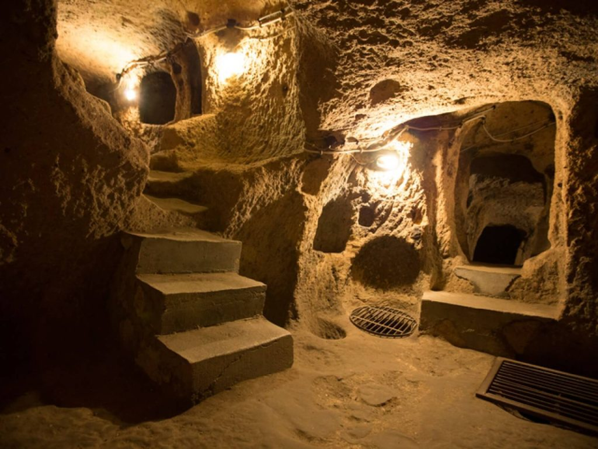
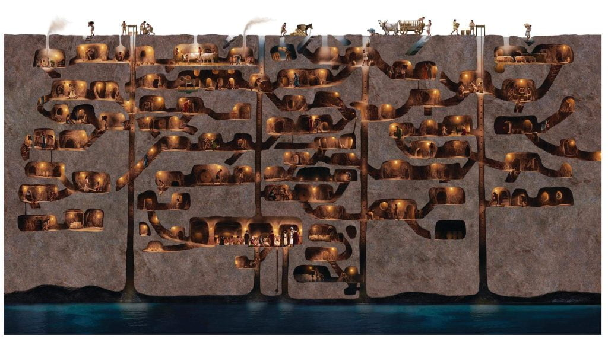
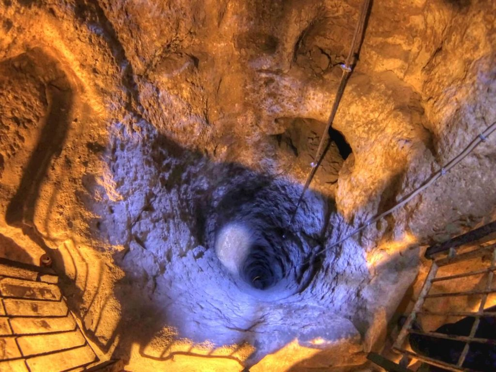
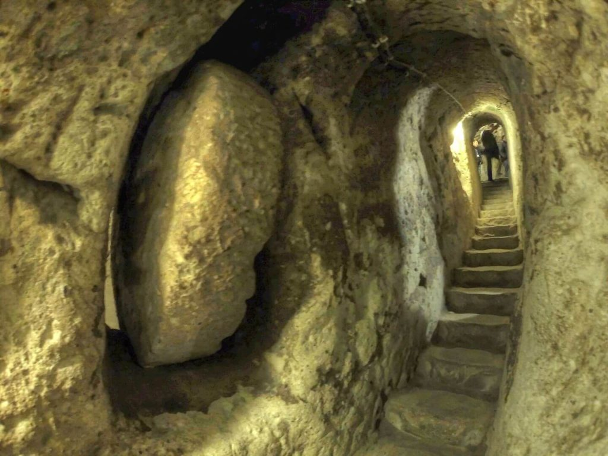
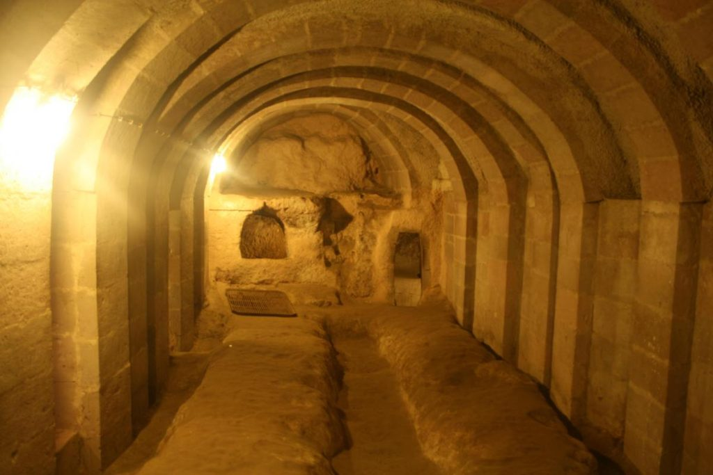
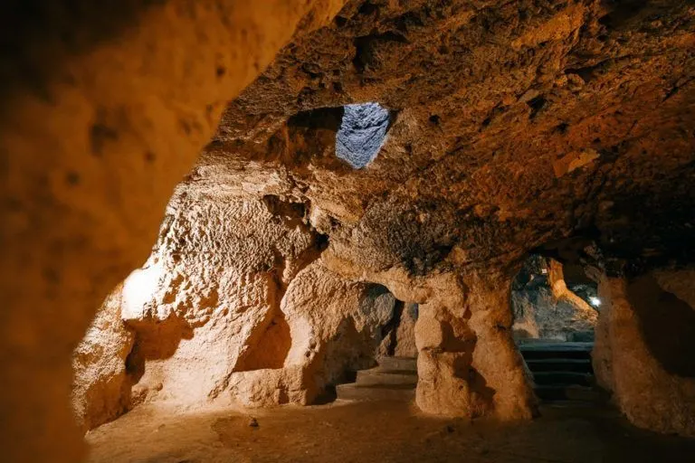
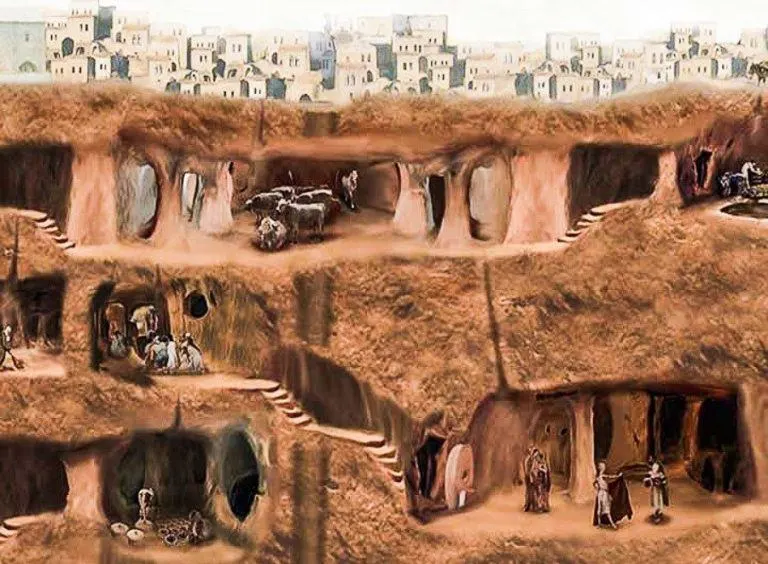
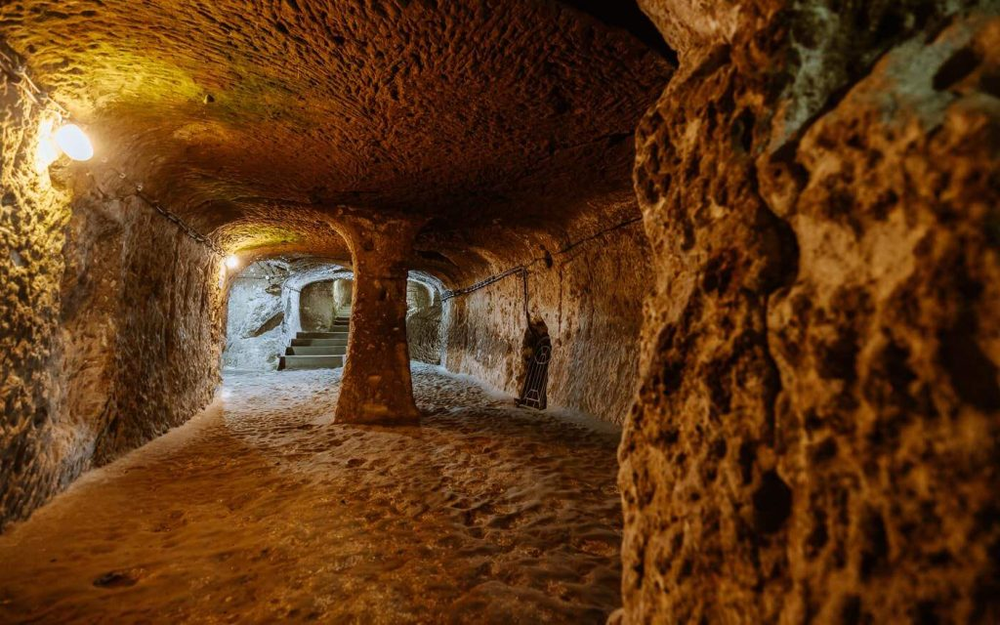
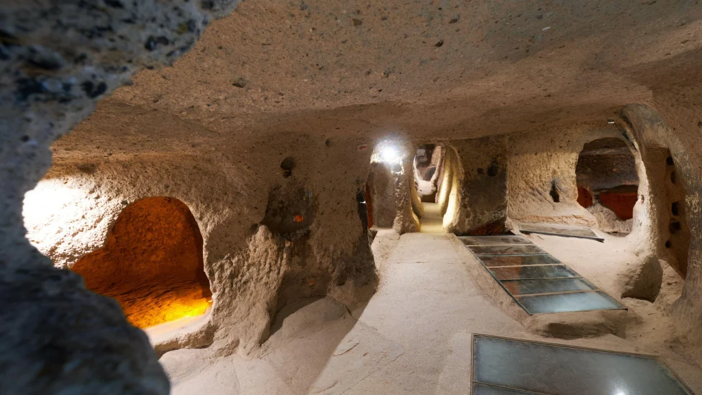

ဒီဖြစ်ရပ် တွေထဲက တစ်ခုကတော့ ရုပ်ရှင်အလား ထင်မှတ်မှား ရတဲ့ ဖြစ်ရပ်တစ်ခု ဖြစ်ပါတယ်။ ဒါကတော့ တူရကီ (Turkey) နိုင်ငံက လူတစ်ယောက်က သူ့အိမ်အောက်က မြေအောက်ခန်း ပြင်ဆင်ရာ ကနေ မြေအောက်ထဲ အထပ်ထပ် တည်ဆောက်ထားတဲ့ ရှေးဟောင်း မြို့ကြီး တစ်မြို့ကို ရှာဖွေ တွေ့ရှိ ခဲ့တာပဲ ဖြစ်ပါတယ်။
ဒီ အဖြစ်ဟာ ၁၉၆၃ ခုနှစ်က ဖြစ်ပွားခဲ့တာ ဖြစ်ပါတယ်။ ၁၉၆၃ ခုနှစ်မှာ တူရကီ နိုင်ငံက ဒီရင်ကူယူ (Derinkuyu) မြို့မှာ နေထိုင်တဲ့ လူတစ်ယောက်ဟာ သူ့ရဲ့ အိမ် မြေအောက်ခန်းကို ပြင်ဆင်မှု ပြုလုပ် ခဲ့ပါတယ်။
ဒီလို ပြင်ဆင်မှု အတွင်း မြေအောက်ခန်းရဲ့ နံရံကို အသစ် ပြန်လည် တည်ဆောက်ဖို့ နံရံ အဟောင်းကို တူနဲ့ ရိုက်ပြီး ဖြိုချ ခဲ့ပါတယ်။
ဒီလို ဖြိုချရာက နံရံရဲ့ နောက်မှာ ဖုံးကွယ်နေတဲ့ လှိုဏ်ခေါင်း တစ်ခုကို တွေ့ရှိခဲ့ ပါတယ်။ ဒီ လှိုက်ခေါင်း အတိုင်း လိုက်သွား ရာမှာတော့ အလွန် ကြီးမားတဲ့ မြေအောက် မြို့ကြီး တစ်ခုကို ရှာဖွေ တွေ့ရှိ ခဲ့ရခြင်းပဲ ဖြစ်ပါတယ်။

အံ့ဩဖွယ် မြေအောက်မြို့တော်ကြီး
ဒီ မြေအောက် မြို့ကြီးဟာ အထပ်အားဖြင့် ၁၈ ထပ်တောင် တည်ဆောက်ထားပါတယ်။ မြေအောက် အနက်ပေ ၂၈၀ အနက်ထိ လှိုဏ်ခေါင်းတွေ တူးဖော် တည်ဆောက် ထားခဲ့ပါတယ်။ ဒီ လှိုဏ်ခေါင်း တွေနဲ့ ဆက်ပြီး လူနေ အိမ်ခန်းလှိုဏ်ဂူတွေ နဲ့ ခန်းမကျယ် ကြီးတွေကိုလဲ တည်ဆောက် ထားပါတယ်။ပညာရှင် တွေရဲ့ တွက်ချက်မှု အရ ဒီ မြေအောက်မြို့ဟာ လူဦးရေ ၂၀,၀၀၀ ခန့်အထိ နေထိုင်နိုင်အောင် တည်ဆောက် ထားခဲ့တယ်လို့ သိရပါတယ်။
ဒီ ဒီရင်ကူယူ မြေအောက်မြို့ဟာ တူရကီ နိုင်ငံ ကာပါဒိုစီယာ (Cappadocia) ဒေသမှာ တည်ရှိပါတယ်။ ဒီ ဒေသဟာ တူရကီ လူမျိုးတို့ရဲ့ ဘိုးစဉ်ဘောက်ဆက် နေထိုင်ရာ ဇာတိမြေ ဖြစ်ပါတယ်။

ဒီ ကျောက်စွန်းတွေဟာ ကျောက်သားကို ရေနဲ့ လေ တိုက်စားပြီး ဖြစ်ပေါ်လာတာ ဖြစ်ပါတယ်။ ဒီ ဒေသက ကျောက်တွေဟာ မီးတောင် ပေါက်ကွဲရာက ထွက်လာတဲ့ ပြာတွေ ကနေ ဖြစ်လာတဲ့ ကျောက်တွေ ဖြစ်ကြပါတယ်။ ဒါ့ကြောင့်မို့ ကျောက်သားတွေဟာ မာကျောခြင်း မရှိ ကြပါဘူး။
ဒီလို ပျော့ပြောင်းတဲ့ ကျောက်သားတွေ ရှိတာမို့ ဒေသခံ တွေဟာ သူတို့ရဲ့ အိမ်အောက်တွေမှာ မြေအောက်ခန်းတွေကို အရင် နှစ်ထောင်ချီ ကတည်းက တည်ဆောက် ခဲ့ကြပါတယ်။ ဒါပေမယ့် ဒီ မြေအောက်ခန်း တွေဟာ အလွန်ဆုံးမှ မြေအောက် နှစ်ထပ်လောက်ထိပဲ တည်ဆောက်ခဲ့ ကြတာပါ။ ဘယ်သူမှ ဒီလို ၁၈ ထပ် နက်တဲ့ ဧရာမ မြေအောက် မြို့တော်ကြီး တစ်ခုအဖြစ် တည်ဆောက်ခဲ့ကြခြင်း မရှိခဲ့ ပါဘူး။

မြေအောက်မြို့တော်ကြီးကို ဘယ်သူတွေက တည်ဆောက်ခဲ့တာလဲ
ဒီရင်ကူယူ ဒေသရဲ့ ရှေးသမိုင်းနဲ့ ပတ်သက်လို့တော့ ပညာရှင်တွေ သိပ်ပြီး များများစားစား မသိ ကြပါဘူး။ ဒီဒေသနဲ့ ပတ်သက်တဲ့ သမိုင်း မှတ်တမ်းလဲ ဘာမှ ဟုတ်တိပတ်တိ မရှိပါဘူး။ ဒီလိုပဲ ဒီ မြေအောက် မြို့တော်နဲ့ ပတ်သက်တဲ့ မှတ်တမ်း မှတ်ရာလဲ ဘာမှ ကျန်ရှိခြင်း မရှိပါဘူး။အချို့ ရှေးဟောင်း ပညာရှင် တွေကတော့ ဒီရင်ကူယူ မြေအောက်မြို့တော်ရဲ့ ရှေးကျတဲ့ အပိုင်းကို ခရစ်မပေါ်မီ ဘီစီ ၂၀၀၀ ခန့်က ဟစ်တိုက် လူမျိုး (Hittites) တွေက တည်ဆောက်ခဲ့တယ်လို့ ယူဆ ကြပါတယ်။
ဟစ်တိုက် လူမျိုးတွေဟာ ဒီ ကာလ တုန်းက ဒီဒေသမှာ မှီတင်း နေထိုင် ခဲ့ကြတဲ့ လူမျိုးစုတွေ ဖြစ်ကြပါတယ်။
အချို့ကလဲ ဘီစီ ၇၀၀ ခန့်က နေထိုင်ခဲ့တဲ့ ဖရီဂျီယန် (Phrygians) တွေက တည်ဆောက်ခဲ့တာလိို့ ခန့်မှန်း ကြပါတယ်။ အချို့ ပညာရှင် တွေကတော့ ရောမ အင်ပါယာရဲ့ ဖိနှိပ်မှု ကနေ ထွက်ပြေးခဲ့ရတဲ့ ခရစ်ယာန် ဘာသာဝင် တွေက ခရစ်နှစ် ပထမ ရာစုမှာ တည်ဆောက်ခဲ့တာ ဖြစ်မယ်လို့ ယုံကြည် ကြပါတယ်။

ကျောက်သား ပျော့ပျော့ကို တူးပြီး လှိုဏ်ခေါင်းတွေ တည်ဆောက်ရတာ တကယ်တော့ မလွယ် ပါဘူး။ ကျောက်သားတွေက ပျော့တာမို့ တူးနေရင်း လှိုဏ်ခေါင်း ပြိုကျတာမျိုး ဖြစ်နိုင်တဲ့ အန္တရာယ် အလွန် ကြီးပါတယ်။ ဒါ့ကြောင့်မို့ လှိုဏ်ခေါင်းတွေ တူးတဲ့အခါ ဝန်အား ခံနိုင်အောင် ကြီးမားတဲ့ ဒေါက်တိုင်တွေကို ထည့်သွင်း တည်ဆောက်ဖို့ လိုပါတယ်။
ဒီရင်ကူယူ မြေအောက်မြို့က အခန်းတွေနဲ့ လှိုဏ်ဂူတခုမှ ပြိုကျခဲ့ ဖူးခြင်း မရှိပါဘူး။

ဒုတိယ အချက်ကတော့ အေဒီ ၆ ရာစုကနေ ၁၀ ရာစုထိကြား ကာလမှာ ပြုပြင် တည်ဆောက်မှုတွေ ပြုလုပ်ခဲ့တယ် ဆိုတာပဲ ဖြစ်ပါတယ်။ ဒီ ကာလ ပြုပြင် တည်ဆောက်မှုတွေကိုတော့ ခရစ်ယာန် ဘာသာဝင် တွေက ပြုလုပ်ခဲ့ ကြတာ ဖြစ်ပါတယ်။

မြေအောက်မြို့တော်ကြီး အတွင်းဝယ်
ဒီလောက် အနက်ကြီး အထပ်ထပ် တည်ဆောက်ထားတဲ့ မြေအောက် မြို့တော် ကြီးအတွက် လိုအပ်တဲ့ လေဝင်လေထွက်ကို ဘယ်လို စီမံမလဲ ဆိုတာကလဲ စိတ်ဝင်စား စရာပဲ ဖြစ်ပါတယ်။ဒီ မြေအောက် မြို့တော်ကြီး ထဲကို လေဝင်လေထွက်အတွက် မြေပေါ်ကို ဖောက်ထားတဲ့ လေရှူပေါက် ၁၅,၀၀၀ ကျော် ထည့်သွင်း တည်ဆောက် ထားပါတယ်။ ဒီ လေဝင်ပေါက် အများစုဟာ အချင်း ၁၀ စင်တီမီတာ (၄ လက္မကျော်) ကျယ်ဝန်းပါတယ်။ ဒီ လေဝင်ပေါက် တွေဟာ မြေအောက် မြို့တော်ရဲ့ ပထမထပ် နဲ့ ဒုတိယထပ် တွေအထိ ရောက်ပါတယ် (မြေအောက်မှာမို့ အထပ်တွေကို အပေါ်ဆုံးကနေ စရေပါတယ်။)
ဒီ လေဝင်ပေါက် တွေဟာ မြေအောက် ရှစ်ထပ်လောက် အထိ လေဝင်လေထွက် ကောင်းမွန်အောင် စွမ်းဆောင်နိုင်စွမ်း ရှိတာကို တွေ့ရှိ ကြရပါတယ်။
မြို့တော်ရဲ့ အပေါ်ပိုင်း အလွှာတွေကို လူနေထိုင်ဖို့နဲ့ အိပ်စက်ဖို့ အသုံးပြု ကြပါတယ်။ ဒါကလဲ သိပ်တော့ မထူးဆန်း ပါဘူး။ ဘာကြောင့်ဆို ဒီ အလွှာတွေက လေဝင်လေထွက် ကောင်းမွန် ကြတာကြောင့် ဖြစ်ပါတယ်။

အပေါ်ပိုင်း လူနေထိုင်ရာ အထပ်တွေနဲ့ အောက်ဆုံးက သိုလှောင်ခန်း တွေ ကြားထဲက အလွှာတွေ ကိုတော့ အခြား လုပ်ငန်း မျိုးစုံ အတွက် အသုံးပြု ကြပါတယ်။ ဝိုင်အရက် ထုတ်လုပ်တဲ့ အခန်းတွေ၊ တိရစ္ဆာန်တွေ မွေးမြူတဲ့ အခန်းတွေ၊ စာသင်ကျောင်းနဲ့ ဘုရားကျောင်း တွေကိုလဲ ဒီ အလယ်လွှာမှာ တွေ့ရှိ ကြရပါတယ်။
ဒီအထဲက အထင်ရှားဆုံး ကတော့ ရှစ်လွှာက လက်ဝါးကပ် တိုင်ကြီး တစ်ခု ထည့်သွင်း တည်ဆောက်ထားတဲ့ ခရစ်ယာန် ဘုရား ရှိခိုးကျောင်းပဲ ဖြစ်ပါတယ်။
အချို့ လေဝင်ပေါက် တွေကတော့ မြေအောက် ပိုမို နက်ရှိုင်းတဲ့ နေရာအထိ ရောက်ပါတယ်။ ဒီ လေဝင်ပေါက် တွေကို ရေတွင်းတွေ အနေနဲ့လဲ အသုံးပြုကြပါတယ်။ တကယ်တော့ အရင် နှစ်ရာပေါင် များစွာ ကတဲက ဒေသခံ တွေက ဒီ တွင်းတွေကနေ ရေငင်ပြီး အသုံးပြုခဲ့ ကြတာပါ။

ဒီ မြို့ရဲ့ အမည် ဖြစ်တဲ့ ဒီရင် ကူယူ (derin kuyu) ကလဲ တူရကီ ဘာသာနဲ့ “ရေတွင်းနက်” လို့ အဓိပ္ပါယ် ရနေပါတယ်။
ဒီမြို့နဲ့ ပတ်သက်တဲ့ နောက် သီအိုရီ တစ်ခုကတော့ ဒီ မြေအောက်မြို့တော်ဟာ ရန်သူတွေ ရန်က ပုန်းအောင်းဖို့ တည်ဆောက်ထားတာ မဟုတ်ပဲ ပြင်းထန်တဲ့ ရာသီဥတု ကနေ ပုန်းအောင်းဖို့ ဒေသခံတွေ တည်ဆောက် ထားခဲ့တာ ဆိုတဲ့ သီအိုရီပဲ ဖြစ်ပါတယ်။
ဒီရင်ကူယူ ဒေသဟာ နွေဆို မတရား ပူပြင်းပြီး ဆောင်းဆိုရင်လဲ အလွန် အေးပါတယ်။ ဒါပေမယ့် မြေအောက် ထဲမှာတော့ အပူချိန်ဟာ သိပ်ပြီး ပြောင်းလဲမှု မရှိပဲ သမ မျှတ နေပါတယ်။ နောက်ပြီး စားနပ် ရိက္ခာတွေကိုလဲ မြေအောက်မှာ ထားသိုခြင်း အားဖြင့် ပိုမို တာရှည် ခံပါတယ်။

ဒါ့အပြင် ၁၄ ရာစု မွန်ဂို ကျူးကျော်စစ် အတွင်းမှာလဲ အသုံးဝင် ခဲ့သလို အောတိုမန် တူရကီ (Ottoman Turks) တွေ ကွန်စတန် တီနိုပယ်လ် (Constantinople) မြို့တော်ကို သိမ်းပိုက်ပြီး နောက်ပိုင်းထိလဲ ဆက်လက် အသုံးဝင် နေခဲ့ပါတယ်။
၂၀ ရာစု အစောပိုင်းက ဒီ ဒေသကို လာရောက် လေ့လာခဲ့တဲ့ ကိန်းဗရစ် တက္ကသိုလ်က ဘာသာဗေဒ ပညာရှင် တစ်ဦးရဲ့ မှတ်တမ်းအရ ဒေသခံ ဂရိ လူမျိုးတွေဟာ လူမျိုးရေး အဓိကရုန်းတွေ ဖြစ်တဲ့ သတင်းကြားတိုင်း မြေအောက် မြို့ထဲမှာ ပုန်းအောင်းနေလေ့ ရှိတယ်လို့ ရေးသား မှတ်တမ်းတင် ထားခဲ့ ဖူးပါတယ်။ ဒါပေမယ့် သူပြောတဲ့ မြေအောက်မြို့ဟာ အခု ဒီရင်ကီယီ ဟုတ်မဟုတ် ကိုတော့ မှတ်သားထားခဲ့ခြင်း မရှိပါဘူး။
Ref: Derinkuyu: Mysterious underground city in Turkey found in man’s basement | Big Think